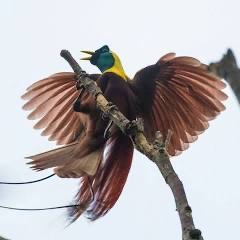
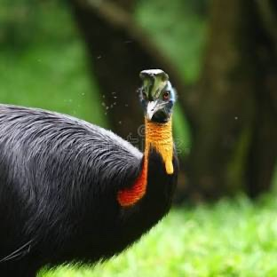
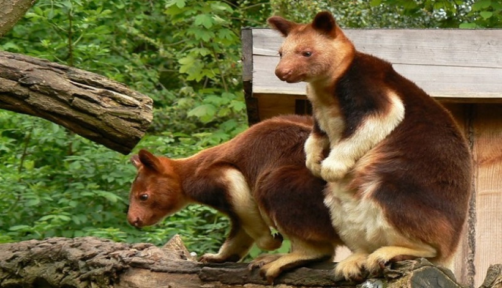

Pulau Papua
Papua, wilayah paling timur di Indonesia, dikenal sebagai salah satu tempat dengan keanekaragaman hayati tertinggi di dunia, baik dari segi flora maupun fauna. Fauna Papua sangat dipengaruhi oleh wilayah Australasia, membuatnya berbeda dari pulau-pulau lain di Indonesia. Papua memiliki banyak satwa endemik, yang artinya spesies ini hanya ditemukan di daerah tersebut. Namun, seperti di banyak bagian Indonesia, satwa-satwa langka di Papua menghadapi ancaman serius dari deforestasi, perburuan liar, serta dampak perubahan iklim.
Papua memiliki ekosistem yang sangat beragam, mulai dari hutan hujan dataran rendah hingga pegunungan tinggi yang menjadi rumah bagi spesies yang sangat langka. Namun, ekosistem tersebut kini menghadapi ancaman dari berbagai aktivitas manusia, termasuk eksploitasi sumber daya alam, konversi hutan menjadi perkebunan, serta infrastruktur pembangunan yang mempercepat deforestasi. Kehilangan habitat menjadi ancaman terbesar bagi fauna Papua, diikuti oleh perburuan liar, terutama untuk spesies yang memiliki nilai komersial tinggi seperti burung cendrawasih dan nuri.
Upaya konservasi di Papua sangat penting untuk melestarikan keanekaragaman hayati yang luar biasa di wilayah ini. Beberapa langkah yang dilakukan termasuk perlindungan kawasan hutan, pendirian taman nasional, pengawasan terhadap perdagangan satwa liar, serta peningkatan kesadaran masyarakat lokal akan pentingnya melestarikan alam. Papua merupakan salah satu benteng terakhir bagi banyak spesies unik di dunia, dan menjaga kelestarian fauna di wilayah ini tidak hanya penting bagi Indonesia, tetapi juga bagi keseimbangan ekosistem global.
Berikut merupakan penjelasan singkat nama hewan dan habitatnya di pulau Papua:
1. Cendrawasih

Cendrawasih adalah burung eksotis yang terkenal dengan keindahan bulunya, terutama yang berasal dari wilayah Papua (Indonesia)
dan Papua Nugini. Burung ini sering disebut sebagai “burung surga” karena bulu-bulunya yang berwarna-warni dan perilaku tarian
kawinnya yang memukau. Ada lebih dari 40 spesies cendrawasih, namun yang paling terkenal adalah Cendrawasih Raja
(Cicinnurus regius) dan Cendrawasih Kuning Besar (Paradisaea apoda).
Ciri-ciri Burung Cendrawasih:
- Bulu berwarna cerah: Burung jantan biasanya memiliki bulu yang sangat mencolok dengan warna-warna seperti kuning, oranye, merah, biru, hijau, dan ungu, sementara betina umumnya memiliki warna yang lebih kusam.
- Bulu ekor yang panjang dan indah: Pada beberapa spesies, bulu ekornya bisa sangat panjang dan berfungsi untuk menarik perhatian betina saat musim kawin.
- Ukuran tubuh bervariasi: Tergantung pada spesiesnya, panjang burung cendrawasih bisa berkisar antara 15 cm hingga lebih dari 40 cm.
- arian kawin: Burung cendrawasih jantan terkenal karena pertunjukan tarian kawinnya yang memikat, di mana mereka menunjukkan bulu-bulu indahnya sambil bergerak lincah di dahan pohon untuk menarik perhatian betina.
Burung cendrawasih hidup di hutan hujan tropis yang lebat, terutama di Papua, Papua Nugini, dan beberapa pulau di sekitarnya. Mereka lebih suka tinggal di kanopi hutan, tempat mereka mencari makanan dan kawin. Makanan utama mereka adalah buah-buahan, meskipun beberapa spesies juga memakan serangga dan hewan kecil.
Perilaku sosial burung cendrawasih sangat unik. Jantan sering membentuk kelompok tarian, yang disebut “lek”, di mana beberapa jantan bersaing dengan memamerkan bulu dan tariannya untuk menarik perhatian betina. Setelah kawin, betina biasanya akan mengurus sendiri sarang dan anak-anaknya.
Beberapa spesies cendrawasih dikategorikan sebagai terancam atau rentan oleh IUCN akibat perburuan liar dan hilangnya habitat. Bulu burung cendrawasih, terutama yang memiliki warna cerah, pernah sangat diminati untuk perhiasan dan hiasan pakaian. Meskipun perdagangan bulu burung kini dilarang, perburuan ilegal masih terjadi di beberapa wilayah. Hilangnya habitat akibat deforestasi dan perluasan lahan juga menjadi ancaman serius bagi kelangsungan hidup mereka.
Burung cendrawasih tidak hanya penting bagi ekosistem hutan tropis, tetapi juga memiliki nilai budaya yang sangat tinggi, terutama bagi masyarakat asli Papua, di mana burung ini dianggap sebagai simbol kecantikan dan kemakmuran.
2. Kasuari Gelambir Tunggal

Kasuari Gelambir Tunggal (Casuarius unappendiculatus) adalah salah satu dari tiga spesies burung kasuari yang dikenal, dan merupakan burung besar yang tidak bisa terbang. Spesies ini juga dikenal dengan nama kasuari leher emas atau kasuari utara, karena lehernya yang berwarna cerah dan habitatnya yang tersebar di hutan hujan tropis dataran rendah di Papua bagian utara serta beberapa pulau di sekitarnya, termasuk Pulau Yapen dan Pulau Seram.
Ciri-ciri Kasuari Gelambir Tunggal:
- Bulu tubuh hitam yang kasar dan kaku, memberikan kesan seperti bulu yang melindungi mereka dari duri dan semak di habitat alaminya.
- Leher berwarna biru cerah dengan bagian tenggorokan berwarna kuning atau oranye, yang menjadi ciri khas spesies ini.
- Gelambir tunggal di bawah lehernya, yang membedakannya dari kasuari jenis lain seperti kasuari gelambir ganda yang memiliki dua gelambir.
- Kaki yang sangat kuat dengan cakar tajam, terutama pada jari tengah yang dapat berfungsi sebagai senjata pertahanan diri.
- Ukurannya besar, dengan tinggi mencapai 1,5-1,8 meter dan berat sekitar 30-50 kg. Betina biasanya lebih besar daripada jantan.
- Kasuari memiliki helm di kepalanya berupa tonjolan keras berbentuk seperti sisir yang disebut kask, digunakan untuk melindungi kepalanya saat bergerak cepat melalui hutan.
Kasuari gelambir tunggal tinggal di hutan hujan tropis yang lebat dan sering ditemukan di wilayah dataran rendah dan rawa-rawa di Papua. Mereka adalah burung soliter dan sangat pemalu, sehingga jarang terlihat oleh manusia. Makanan utamanya adalah buah-buahan yang jatuh dari pohon, tetapi mereka juga memakan serangga, jamur, dan hewan kecil lainnya. Kasuari dikenal sebagai burung yang bisa sangat agresif jika merasa terancam. Kakinya yang kuat dilengkapi dengan cakar yang tajam mampu melukai hewan atau manusia jika diserang. Meskipun mereka tidak bisa terbang, kasuari dapat berlari sangat cepat, hingga mencapai kecepatan 50 km/jam, dan juga perenang yang handal.
Kasuari gelambir tunggal dikategorikan sebagai rentan (Vulnerable) oleh IUCN. Ancaman utama bagi spesies ini adalah hilangnya habitat akibat deforestasi dan perluasan lahan pertanian di Papua. Selain itu, perburuan juga menjadi masalah serius, meskipun kasuari dilindungi oleh undang-undang di beberapa wilayah. Kasuari gelambir tunggal adalah salah satu burung ikonik Papua yang sangat penting dalam menjaga keseimbangan ekosistem hutan tropis di kawasan tersebut.
3. Kangguru Pohon Mantel Emas

Kangguru Pohon Mantel Emas (Dendrolagus pulcherrimus) adalah salah satu spesies kangguru pohon yang sangat langka dan endemik di wilayah Papua dan Papua Nugini. Spesies ini termasuk dalam keluarga kangguru, namun berbeda dengan kangguru darat yang biasa dikenal, kangguru pohon hidup di pepohonan dan telah beradaptasi dengan kehidupan arboreal (di atas pohon). Nama “mantel emas” merujuk pada warna bulunya yang unik dan mencolok.
Ciri-ciri Kangguru Pohon Mantel Emas:
- Bulu berwarna keemasan atau coklat kemerahan di bagian punggung, dengan bagian perut yang lebih pucat. Pada beberapa individu, bulu keemasan ini membentuk semacam “mantel” di sekitar leher dan bahu, yang membuatnya terlihat sangat indah dan mencolok.
- Ekor panjang yang membantu mereka menjaga keseimbangan saat bergerak di antara pepohonan. Ekor ini juga berwarna keemasan atau coklat seperti bulunya.
- Tubuh yang lebih kecil dibandingkan dengan kangguru darat, dengan panjang sekitar 50-70 cm, sementara ekornya bisa mencapai panjang yang sama. Beratnya berkisar antara 6 hingga 10 kg.
- ungkai yang kuat dan cakar tajam untuk membantu memanjat pohon dengan cekatan. Kaki depan mereka lebih panjang dan kuat dibandingkan kangguru darat, yang membantu dalam bergerak di cabang-cabang pohon.
Kangguru pohon mantel emas hidup di hutan hujan tropis pegunungan di Papua dan Papua Nugini. Mereka adalah hewan yang arboreal, menghabiskan sebagian besar waktu mereka di pepohonan, tempat mereka mencari makanan seperti daun, buah, bunga, dan kulit kayu.
Kangguru pohon mantel emas lebih aktif di malam hari (nokturnal), meskipun kadang-kadang bisa terlihat bergerak di siang hari. Kangguru pohon ini bersifat soliter dan jarang terlihat dalam kelompok besar.
Mereka cenderung bergerak lambat dan hati-hati di antara cabang-cabang pohon, tetapi mampu melompat dengan lincah dari satu dahan ke dahan lainnya jika diperlukan.
Kangguru pohon mantel emas dikategorikan sebagai terancam punah (Endangered) oleh IUCN, terutama karena hilangnya habitat akibat deforestasi untuk perkebunan dan perluasan lahan pertanian.
Populasi mereka terus menurun karena perburuan dan kerusakan hutan yang cepat, terutama di wilayah pegunungan yang merupakan habitat asli mereka. Kangguru pohon mantel emas adalah salah satu satwa yang menjadi simbol kekayaan alam Papua dan memiliki peran penting dalam menjaga keseimbangan ekosistem hutan hujan tropis pegunungan.